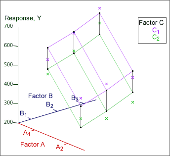

Simple model for three factors
The simplest model for data from a factorial experiment assumes that there is no interaction between the effects of any of the factors — each acts additively on the response. For an experiment with 3 factors, this implies that...
(mean response) = (base value) + (effect of factor A) + (effect of factor B )
+ (effect of factor C)
This model can be illustrated in a 3-dimensional examination. All lines are parallel if there is no interaction.

Randomisation
As in all other experiments, it is important to remember that the treatments (factor combinations) should be randomly allocated to the experimental units — randomisation of the experiment.